No one knows what lies beneath the waterline.
January 7, 2026. North Atlantic.
Crimson Draft is a survival horror game set aboard the Marinera, a sanctioned oil tanker found drifting and silent in the North Atlantic. Every bullet is permanent, every lost operator is gone for good, and the drug keeping your team alive may be the thing that is killing everyone on board.
The Marinera, formerly the Bella I, has been chased across the ocean for weeks. Her manifest says she is empty, yet she rides several feet too low in the water. When she stops answering, a special operations team is sent aboard under the name Operation Crimson Draft. There is no extraction, no resupply and no backup.
Crimson Draft is a survival horror game inspired by Resident Evil, Sweet Home and Parasite Eve. Combat is a cost, not a reward: ammunition is finite across the whole game, operators who die stay dead and take their weapons with them, and there are no shops or random drops. Players aim shots by hand, choose between ammunition types against layered armor, and read their squad's condition through a cardiac monitor instead of a health bar.
Below deck, the team uncovers what the ship is really carrying: KRK-NL, a field stabilizer that keeps operators alive when nothing else will, and that may be the same substance that destroyed the crew. As documents, transmissions and sabotage pile up, the mission turns into a political thriller about power, deniability, and a betrayal from inside the squad.
No heroes. No easy answers. No one left behind.
Features
- Combat is a cost. Finite ammunition, no shops, no random drops. What is on the ship is all there is.
- Permanent loss. Operators who fall stay dead, and their weapons go with them.
- Skill-based aiming. Line up every shot by hand. Wounds make it harder, but never take control away.
- Health without numbers. Read heart rhythm, pulse and blood pressure. An operator can bleed out with a green ECG.
- Tactical ammunition. Hollow points tear flesh but fail against plates; armor-piercing rounds do the opposite.
- KRK-NL. The item that prevents death is also the one that changes your operators forever.
- A ship that tells the story. Crew notes, logs, Morse transmissions and environmental clues.
- Grounded horror. No supernatural monsters. The enemies were human, and someone made them this way on purpose.
Trailer
Raw gameplay footage (B-roll, 75 s, no music or text) is included in the video ZIP.
Screenshots
Click for full resolution (1920×1080 PNG).


GIFs
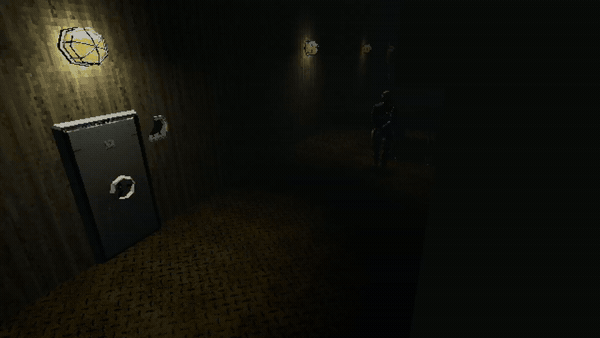
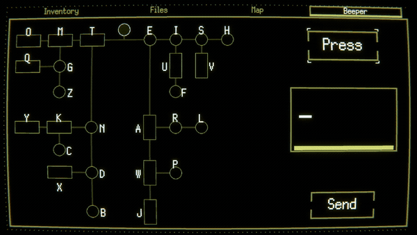
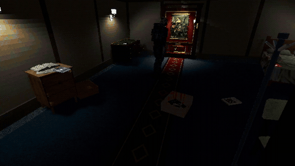
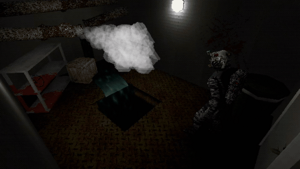
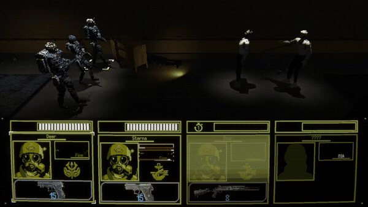
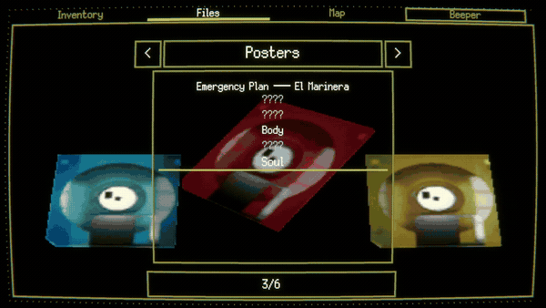
Logos & Key Art


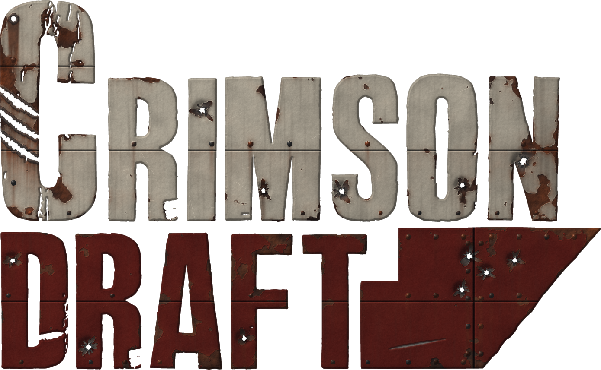


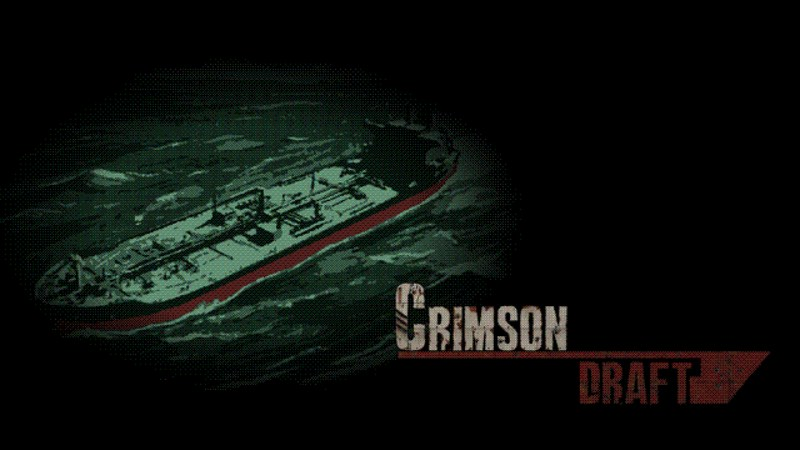

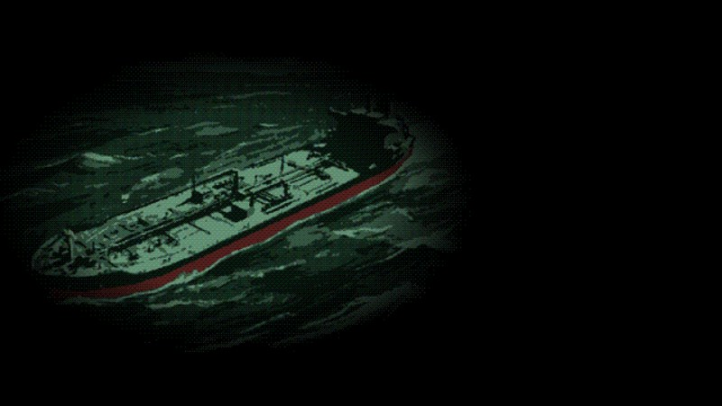

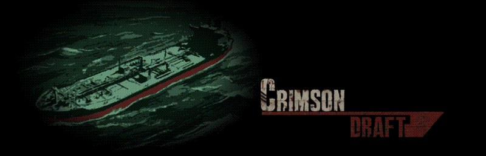

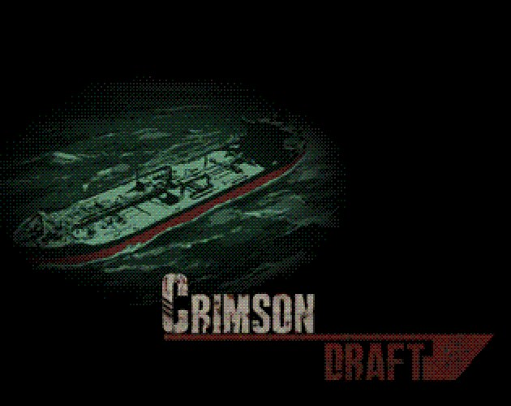

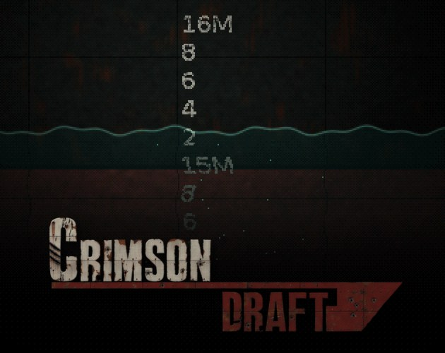

Phase One
Phase One is a five-person independent team from Buenos Aires, Argentina, founded in 2026, bringing together game design, programming, 2D and 3D art. Crimson Draft is the studio's debut project.
Contact
Press inquiries: phaseoneworks@gmail.com
Game page: phaseoneworks.itch.io/crimson-draft